ご当地TOP 20
「ここでしか食べられない」を基準に5ロール専門家が厳選。全店写真＋口コミ付き
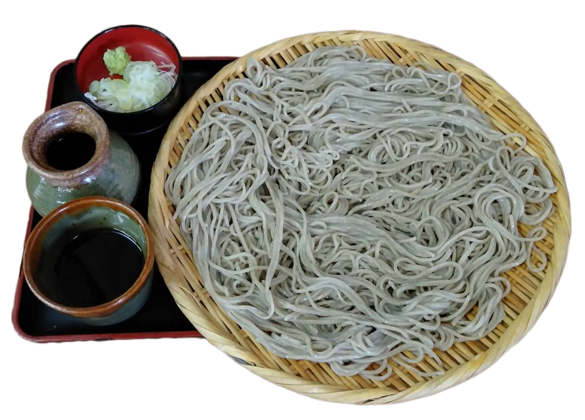
1位 ／ 98点
そば処 おにひら
信州そば ｜ 南信州産そば粉＋地下湧水の石臼挽き
🟢 温泉街内 車2分 ／ 年中無休
🏆 ここだけの理由: 南信州産そば粉を地下湧水で石臼挽き。3人前が巨大せいろに豪快盛りの「おにひらそば」は家族シェアに最高。TripAdvisor阿智村1位。
3人前が四角い大きなせいろに豪快に盛られて圧巻
そば粉と水、天ぷらの山菜も絶品
— TripAdvisor / じゃらん 4.2
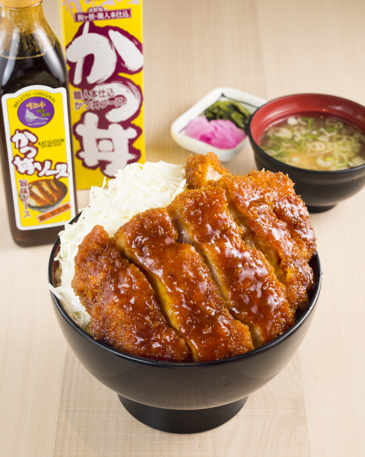
2位 ／ 97点
明治亭 駒ヶ根本店
駒ヶ根ソースかつ丼 ｜ 唯一の自家製ソース
🔵 東京方面 車50分 ／ 年中無休
🏆 ここだけの理由: 駒ヶ根ソースかつ丼は卵でとじない独自スタイル。41店中唯一の自家製ソース。肉厚150gのカツに甘めソースをくぐらせキャベツの上に。
衣が薄いため油っこさゼロ。ソースは唯一の自家製造
ボリューム満点で肉厚ジューシー。甘めソースが特徴
— 食べログ3.67 / TripAdvisor駒ヶ根1位
⚠ 土日は11時前着推奨（行列あり）。駒ヶ根ICから5分。
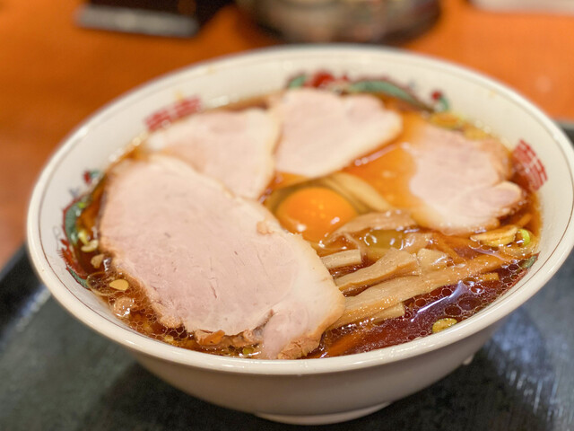
3位 ／ 96点
上海楼
飯田ラーメン ｜ 全国無名の隠れたソウルフード
🔴 名古屋方面 車25分 ／ 水曜定休
🏆 ここだけの理由: 「飯田ラーメン」は全国的にほぼ無名。独特の「柔らかめ細麺」＋出汁のきいた醤油スープ。飯田の高校生が必ず行く青春の味。
飯田のソウルフード。高校生は必ず行ったことがある
揚げ餃子は皮がもっちりパリッと。甘いタレとの相性抜群
— 食べログ3.50 / 地元メディア多数
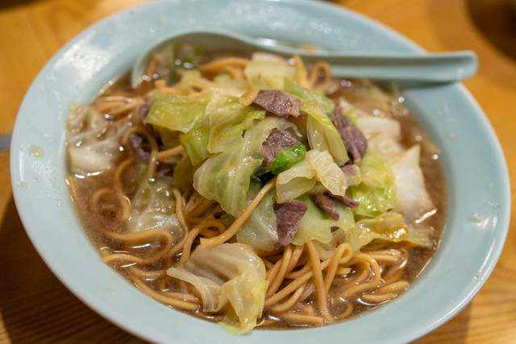
4位 ／ 96点
萬里（ばんり）
ローメン ｜ 伊那市にしかない日本唯一のご当地麺
🔵 東京方面 車65分 ／ 月曜定休
🏆 ここだけの理由: 昭和30年創業のローメン発祥の店。蒸し中華麺＋マトン＋キャベツ。ラーメンでも焼きそばでもない第三の麺は伊那市にしか存在しない。
レンガ造りに赤い暖簾。調味料の容器が磨かれ、もてなしの姿勢を感じる
自分で酢やラー油を足して食べるのが流儀。並盛でもボリューム満点
— 食べログ / TripAdvisor
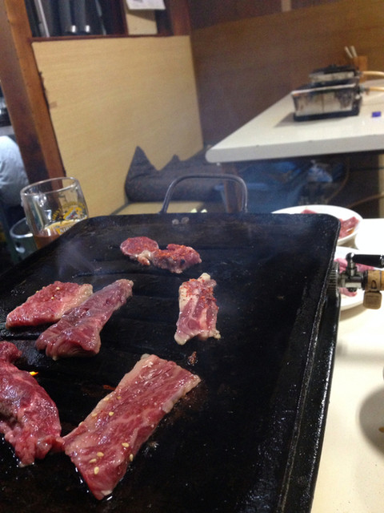
5位 ／ 95点
やきにく徳山
飯田焼肉 ｜ 人口比日本一の焼肉の街のレジェンド
🔴 名古屋方面 車25分 ／ 不定休
🏆 ここだけの理由: 飯田は焼肉店数が人口比日本一。1930年代ダム建設時代に起源。生マトンを醤油＋一味のタレで食べる独自文化は全国でここだけ。
昭和20年代から店構えも鉄板も変わらない。飯田焼肉界のレジェンド
煙が凄い。服に匂いがつくが、それが味わい深い
— TripAdvisor / 地元メディア
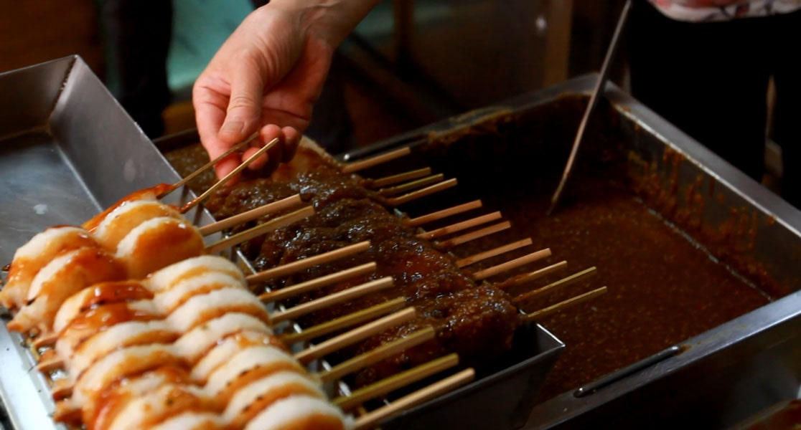
6位 ／ 95点
今宮半平
五平餅 ｜ 明治5年創業・5代目の伝統タレ
🔴 名古屋方面 車25分 ／ 水曜定休
🏆 ここだけの理由: 五平餅は南信州〜東濃の郷土食。今宮半平は明治5年から5代続く老舗。季節でタレの香りを変える（春夏は木の芽、秋冬は柚子）。
やさしい味で美味しかった。蕎麦と五平餅をリーズナブルに楽しめる穴場
— Google口コミ
🍜
7位 ／ 94点
昼神うどん 玉のゆ
昼神うどん ｜ 昼神温泉でしか食べられないご当地うどん
🟢 温泉街内 車2分 ／ 火曜定休 ／ 14時前閉店注意!
🏆 ここだけの理由: 「昼神うどん」は昼神温泉郷だけの名物。信州産豚肉＋葱＋ニンニクの温かいつけ汁で食べる。手作り牛乳プリン（卵不使用）もあり。
地元の方が「世界一美味しい」と言うほど
程よくコシがあって喉ごしが良い。つけ汁が最高
— ブログ・口コミ
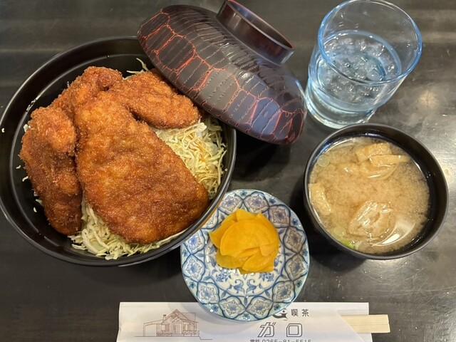
8位 ／ 93点
ガロ
駒ヶ根ソースかつ丼 ｜ ゆるキャン△聖地・蓋が閉まらない
🔵 東京方面 車50分 ／ 火+第1/3水定休
🏆 ここだけの理由: 「ゆるキャン△」に登場して聖地巡礼スポットに。喫茶店風の店内で丼の蓋が閉まらないほどのメガ盛りかつ。
丼のふたが閉まらないほどそびえ立つカツの山
甘辛ソースだれが好評。しつこくない味
— 食べログ3.48 / TripAdvisor4.2
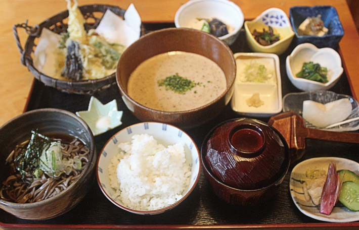
9位 ／ 93点
御食事処 音吉
山家料理 ｜ 妻籠宿の宿場料理
🔴 名古屋方面 車35分 ／ 火曜定休
🏆 ここだけの理由: 中山道の宿場町で食べる山家料理。天然鮎・旬の山菜天ぷら・自然薯とろろは木曽路でしか味わえない。檜造りの店内。
接客が大変良い。季節の山菜天ぷらがボリュームたっぷり
メイン通りから少し離れた穴場。静かにゆっくりランチを楽しめる
— 口コミ
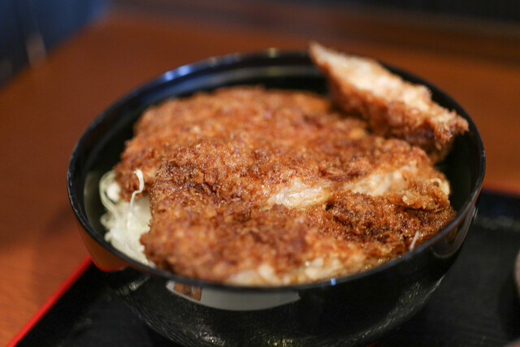
10位 ／ 92点
きらく
駒ヶ根ソースかつ丼 ｜ 昭和3年創業の「元祖」
🔵 東京方面 車50分 ／ 月曜定休
🏆 ここだけの理由: 駒ヶ根ソースかつ丼の「元祖」。さらさらソースが独特。明治亭より安い1,080円〜。地元民No.1の支持。
元祖の看板は伊達じゃない。肉厚だが柔らかくソースさっぱり
— TripAdvisor4.4
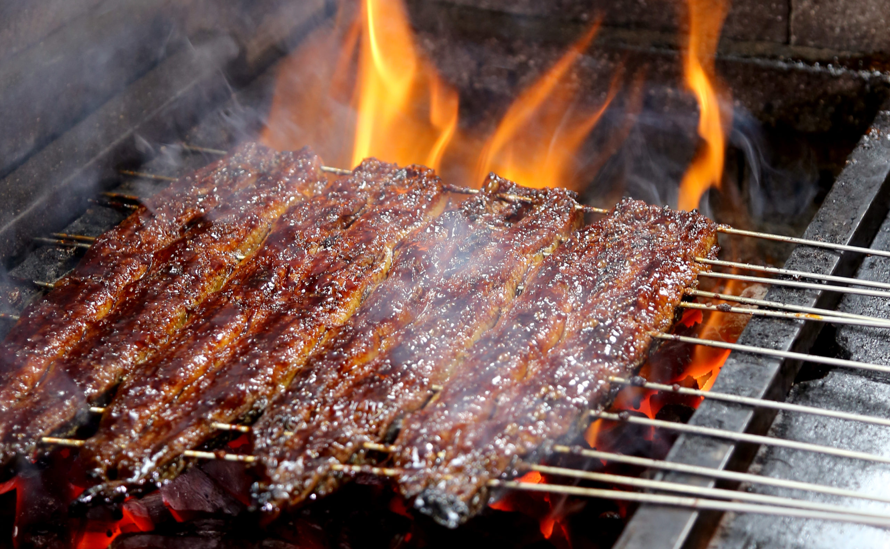
11位 ／ 92点
割烹 丸井亭
関西風うなぎ ｜ 創業90年超・蒸さない直焼き
🔴 名古屋方面 車25分 ／ 木曜定休
🏆 ここだけの理由: 長野県で珍しい関西風（蒸さない直焼き）。外パリ中ふわ。松730円は日本最安級。100年継ぎ足しのタレ。
飯田でうなぎといえばここ。関西風の直焼きが絶品
— 口コミ
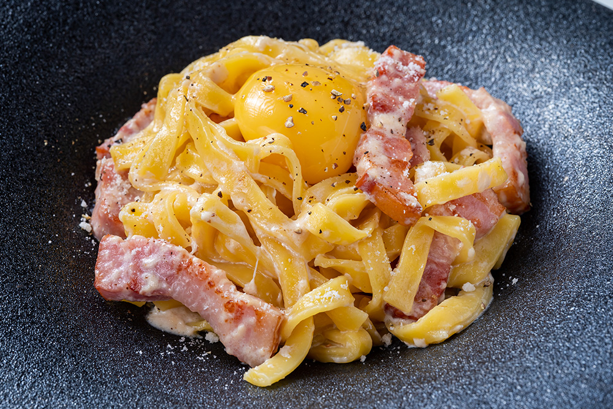
12位 ／ 91点
阿智 星空食堂
ジビエ洋食 ｜ 南信州の鹿肉・猪肉をカジュアルに
🟢 温泉街内 車3分 ／ 水曜定休
🏆 ここだけの理由: 「日本一の星空の村」コンセプト食堂。南信州産ジビエ（鹿・猪）を子供でも食べやすい洋食スタイルで。星空映像の店内演出あり。
店内は広々、カフェ風。素材の味を活かした料理が豊富
— 食べログ3.17
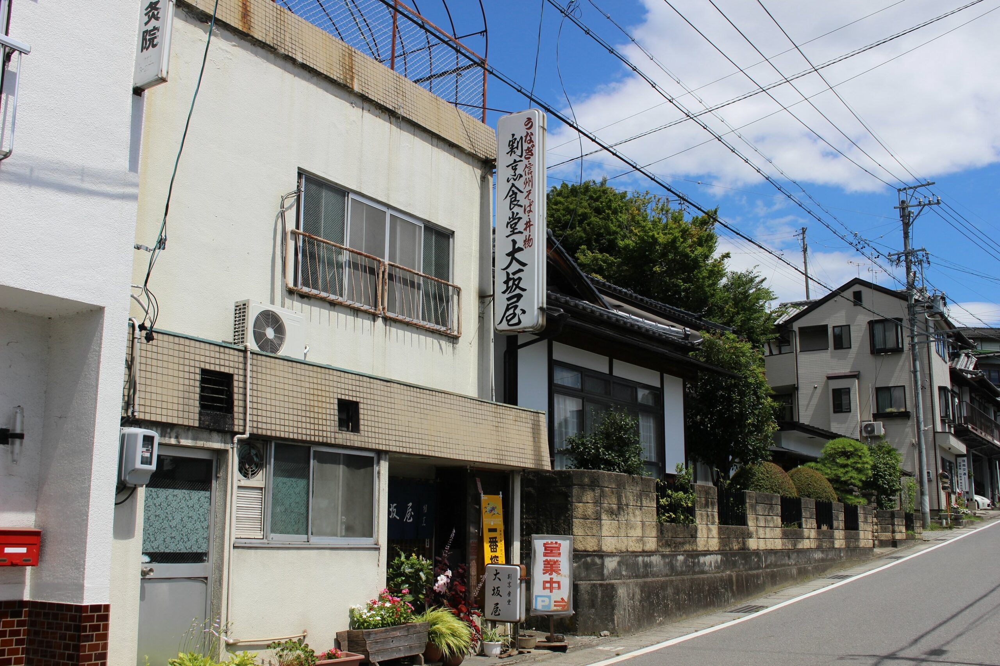
13位 ／ 91点
割烹食堂 大阪屋
甘いカツ丼 ｜ 阿智村の地元民ソウルフード
🔴 名古屋方面 車10分 ／ 火木定休
🏆 ここだけの理由: 甘〜いソースのカツ丼は阿智村ローカルの味。メディア掲載多数だが観光客はまだ少ない穴場。
地元の人が通う隠れた名店。甘いソースのカツ丼がクセになる
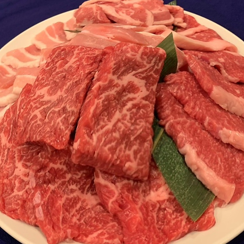
14位 ／ 91点
焼肉のだいこく家
飯田焼肉 ｜ 全席半個室で子連れ最強
🔴 名古屋方面 車20分 ／ 年中無休
🏆 ここだけの理由: 飯田の焼肉文化を子連れで体験するならここ。全席半個室の掘りごたつ。200席で待ち少なし。牛カルビ480円〜は破格。
低価格で量が多く地元民に愛されている。半個室で子連れ安心
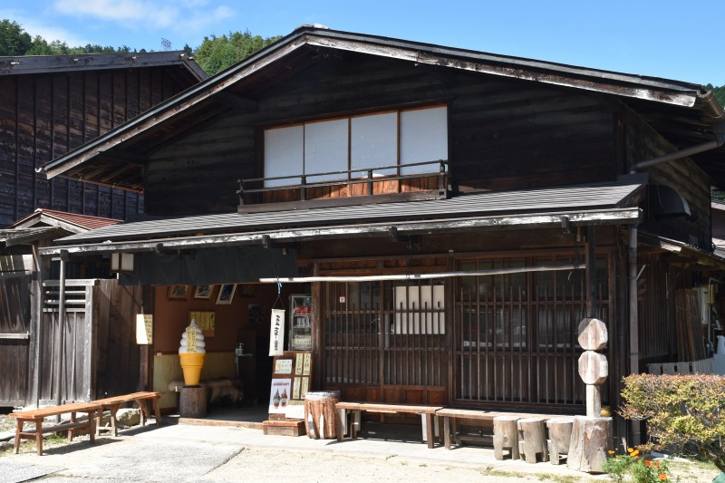
15位 ／ 90点
妻籠宿 五平餅食べ歩き
五平餅5店 ｜ さわら串で焼く団子型
🔴 名古屋方面 車35分
🏆 ここだけの理由: 妻籠は団子型五平餅。さわら串で焼くと木の香りが移る。おもて・やまぎり・吉村屋・俵屋里久・金剛屋の5店で食べ比べ。
遠方からわざわざ足を運ぶ人が後を絶たない（やまぎり食堂）
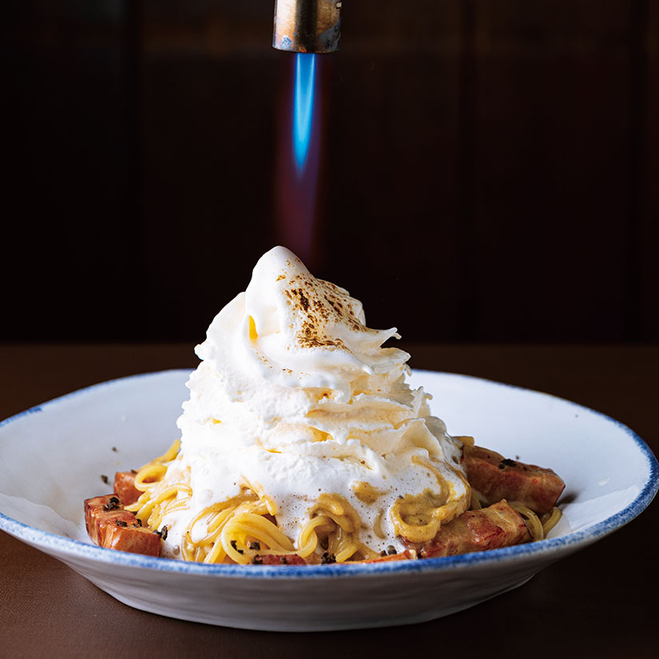
16位 ／ 90点
ソットオーリオ
イタリアン ｜ 南信州産食材の自家製生パスタ
🔴 名古屋方面 車20分 ／ 年中無休
🏆 ここだけの理由: 南信州の野菜・果物を使った自家製生パスタ。ランチはサラダバー＋ドリンクバー＋メイン＋ドルチェのフルセット。子連れに最適。
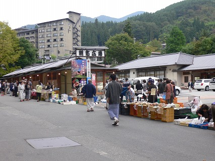
17位 ／ 90点
昼神温泉朝市
食べ歩き ｜ 毎朝365日開催の温泉朝市
🟢 温泉街内 徒歩5分 ／ 年中無休 6:30〜8:00
🏆 ここだけの理由: 清内路の寄せとうふ（土日限定100パック即完売）、フルーツトマト（ソムリエサミット2位）、市田柿。地元農家の直売。

18位 ／ 89点
小黒川PA 黒かつ定食
活性炭とんかつ ｜ このPAだけの真っ黒カツ
🔵 東京方面 中央道上 ／ 24h
🏆 ここだけの理由: 大芝高原産の活性炭を衣に使った真っ黒なとんかつ。わさび＋塩＋ソースの3種で食べる。見た目のインパクトで6年生が食いつく。
まずは塩で食べてと教えてくれる。PA侮れない
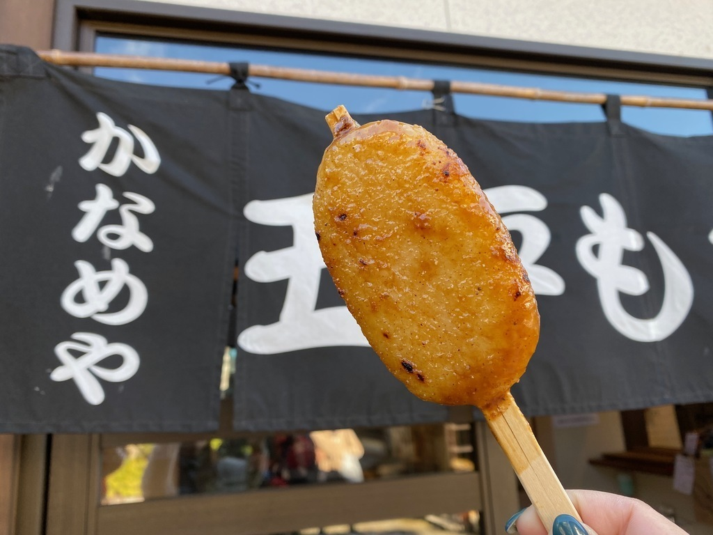
19位 ／ 89点
かなめや（馬籠宿）
五平餅 ｜ 46年自家製タレの老舗
🔴 名古屋方面 車45分 ／ 冬期休業明け要確認!
🏆 ここだけの理由: 馬籠はわらじ型五平餅。妻籠の団子型と食べ比べると面白い。ゴマ・クルミ・ピーナッツの自慢タレ。恵那山の絶景つき。
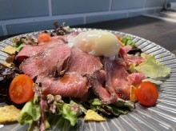
20位 ／ 88点 ／ 子連れ最強
cafe'time
カフェ ｜ 保育士店長の子連れ天国
🔴 名古屋方面 車20分 ／ 木曜定休
🏆 ここだけの理由: 店長が保育士資格保有。栄養士監修の離乳食、キッズルーム、授乳室完備。年中さんにとって最も安心できる食事スポット。